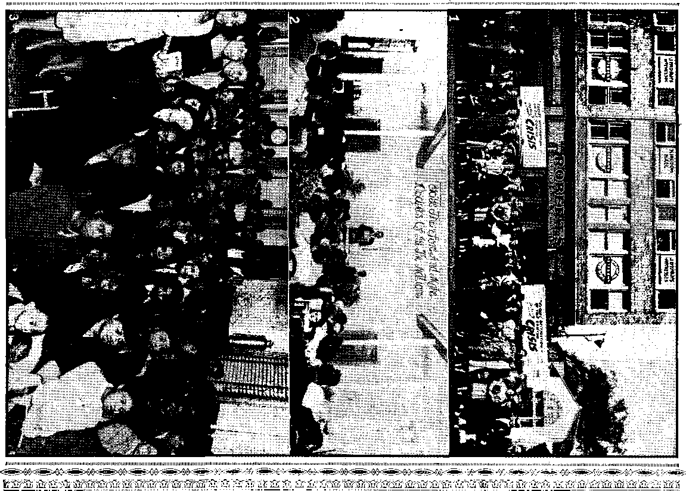

Jehovah's witnesses Triumph over
Nazis Craved Denial of Jehovah
Commission to Preach Remembered
Jehovah Directs Their Movements
Public Meetings, East and West
Jehovah's witnesses in the Cameroons
Published every other Wednesday by WATCHTOWER BIBLE AND TRACT SOCIETY, INC. 117 Adams St., Brooklyn 1, N* Y., U.S.A.
' OFFICERS President N. H. Knorr
Secretary W. E. Van Amburgh
Editor Clayton J. Woodworth
. Five Cents a Copy
a year in the United States ■ Si.25 to Canada and all other uountrlea
NOTICE TO SUBSCRIBERS Remittances: For your own safety, remit by postal or express money order. When coin or currency is lost in the ordinary mails, there is no redress. Remittances from countries other than tho»e named below may be Ti&de to the Brooklyn office, but only by International postal money order. 1
Receipt of a new or renewal subscription will be acknowledged Only when requested. Notice af Expiration Is sent with the Journal one month before subscription expires. Please renew promptly to avoid loss of copies. Send change of address direct to us rather than to the post office. Your request should reach us at least two weeks before the date of issue with which it is to take effect. Send your old as well as the new address. Copies will not be forwarded by the post office to your new address unless extra postage is provided by you. Published also in Greek, Portuguese, Spanish, and Ukrainian.
OFFICES FOR OTHER COUNTRIES
Argentina Calle Honduras 564(1-48, Buenos Aires Australia 2 Homebush Rd., Strathfield, N. S. VVb
Brazil Rua TJcfnio Cardoso 330, Rio de Janeiro Canada 40 Irwin Ave., Toronto 5, Ontario, Canada England 34 Craven Terrace, London, W. 2
Mexico Calzada Melchor Ocampo 71., Mexico, D. F. South Africa 623 Boston House, Cape Town
Entered as second-class matter at Brooklyn, N. Y.( under the Act of March 3, 1879.
In Brief
How the Priests Rob the People
♦ As a former Catholic I wonder what is wrong with the people’s mindM . they cannot see that they are tfeipg robbed by the priests whom they accept as God’s chosen men. Right now the c priests are filling their purses with money obtained for masses which they say are a means of delivering souls from “purgatory”, which, say they, is a place in which untold millions are burning alive in fires of brimstone, and suffering horribly frotn thirst until God feels that they have had enough, when He accepts them to heaven. Prices range from $5 up, according to the notion of the priest, with the time running from 20 to 30 minutes, according to the speed with which the prayers are recited.
The charge for baptism is from $3 up, according to the priest and the locality, but there is no record that John charged anything for baptizing Jesus Christ.
Confirmation brings another charge.
The marriage price is something to write home about. In the parish to which ■ I once belonged, if a couple asked for a low mass (one without music or singing) it would cost but $8. If the couple asked for a high mass, the priest got $10 or more. In other churches the prices range as high as $150. In my own case my husband paid $25, and for this I was allowed to walk on a strip of carpet and to have the use of four better chairs than if he had paid the priest but $10. At that time, 44 years ago, our men 'were getting but $10.50 a week as wages, and that always rankled in my mind. What pretense in the name of Almighty God! What blasphemy! What hypocrisy! When will the people awake?—S.N.
(The balance of the long letter con- ' tains details of robberies and indecencies of priests in New England whose names and addresses are given, and which would be a disgrace to even summarize.)
“And in His name shall the nations hope.”—Matthew 12:21, A.jS'.T.
Volume XXVI Brooklyn, N, Y», Wednesday, September 12r 1945
Number 678
Jehovah’s witnesses Triumph over Concentration Camps
A gripping account of God's people In Germany withstanding a twentieth-century revival of the Inquisition; their refusal to re* nounoe faith, their perseverance In preaching, and their deliverance.
WHEN the wrath of a war-mad world was flaming at white heat against Nasri Germany the Boman Catholic Hierarchy in the United States seized upon that moment to brand Jehovah’s witnesses as Nazis, Nazi sympathizers, fifthcolumnists. These epithets were flung at God’s Christian witnesses as thick and fast as the cries of “Reds!” and "Communists!” were hurled at them a few years previous. The change in the rabble-rousing Hierarchy’s name-calling tactics came when much of the odium attaching to Communism was shifted by an unstable public to Nazism.
But was this new cry any truer than the false charge of their being Communists? Was it, for instance, the president of the Watchtower Bible and Tract Society of Jehovah’s witnesses who blessed as a glorious crusade that Fascist Mussolini’s rape of Ethiopia? or was it the pope of Rome ? Was it one of Jehovah’s witnesses who whitewashed that Butcher Franco by calling him a “fine Christian gentleman” -when he and his Nazi and Fascist buddies slaughtered Spanish democracy? or was it the pope of Rome? Was it a representative of Jehovah’s witnesses who unfurled the Nazi swastika over their meeting-place for worship in welcome of that madman Hitler’s invasion of Austria? or wms it flown from the Catholic cathedral of the pope’s Cardinal Innitzer? Was it not the Catholic priest “Father” Tiso (now held by the Allies as a war criminal) that Hitler made ruler over conquered Slovakia, and not one of Jehovah’s witnesses? Was it not the Hierarchy priests that followed Hitler’s legions into Poland and on into atheistic Russia writh their mobile truck-churches, in a boasted modern crusade? Furthermore, was it not the Vatican that espoused the cause of that sneaking Axis partner Japan as against invaded China’s cause? and established diplomatic relations with Nip-,pon after the Pearl Harbor attack? and recognized the Japanese-sponsored government of the Philippines instead of the claims of the United States?
Within the borders of Germany itself, was it not the Catholic bishops of Fulda who pledged loyalty to Hitler and expressed gratitude and indebtedness to the then-victorious German troops? Was not Hitler a Catholic? a concordat partner of the pope? and was he ever excommunicated, in accord with numerous requests from honest and liberal Catholic groups of Jaymen? Who, then, wmre the Nazi collaborationists, sympathizers, and fifth-columnists? Anyone who knows anything about wfliat has gone on in this battered old world for the past dozen years need not be told that it was the Roman Catholic Hierarchy and her dupes.
SEPTEMBER 12, 1945
But how did Jehovah’s witnesses stand in Germany and the one-time occupied countries? Did they heil Hitler, or collaborate, or even so much as compromise? Does the following report from a Nazi concentration camp sound like it ?—
/There was a flogging of five prisoners in the concentration camp of Sachsenburg, where a Bible student [Jehovah’s witness] was particularly brutally ill-treated by the camp commander in person. After the Bible student ■ had received eighteen strokes he moaned from the pain. The head of the commander was crimson red and he roared loudly: “You d---- schwein, cry to your Jehovah, that he
help you! Why doesn’t he help you? Call to him, that he crush us; then you can trample on us!” Then they flogged the Bible strident until he became unconscious. Nevertheless, seven more strokes rained down on him. They unbuckled him from the torture stake, and he fell down like a sack. He was lifeless on the floor.
That atrocity occurred in 1935, two years after papal nuncio Pacelli, now Pope Pius XII, helped maneuver Hitler into power and negotiated the concordat between Catholic Church and Nazi dictator. Before the fall of the Vatican-Nazi forces such scenes were multiplied many hundredfold. Through the follow-* ing report peer into one of the bestial concentration camps for women, where once more the center of .Nazi attention is one of Jehovah’s witnesses:
The woman overseer guarded the prisoners with trained bloodhounds. Several sisters refused, for conscientious reasons, to do war work. One day 85 sisters were beaten by order of the commander of the camp. While they were standing in line awaiting the blows, one sister encouraged the others to be brave. The commander (with an Eglon-like belly) noticed this and cried out: “Come over here; the Dutch woman!” She was infamously beaten in front of the others. She went back to her place, her head high. This courageous attitude enraged the “Eglon” commander. The sister was made to go into the bunker. After all the others had received their share of the brutalities she received 25 more blows, and was then shutmp again in the bunker. She lay down. It was freezing outside. The bed was attached against the wall. With her limbs covered with blood and her back bleeding, she was obliged to lie on the cement floor. She got colder and colder and her flesh became hard and burning. She prayed to God to help her. A few minutes later the door opened and she was taken into another bunker with a sister. This sister tried in vain to warm her sick companion. Finally, she lay down on the floor, and the sister who had been beaten nearly to death lay on top of her. They stayed all night in this-position. In this way a long-drawn-out death was kept off. Our Master has said: “This is my commandment, That ye love one an- ' other, as I have loved you.” (John 15:12) Himmler, who was personally present, said to the sister later, “I will make a sprightly German girl of you yet.” But the Galilean has triumphed: this sister was released and immediately re-entered the pioneer [full-time witnessing] service.
A new note rises to the surface in this report, a note of triumph for the cause of Christ Jesus, a note of vindication for the name of Jehovah God. Let us tune in this triumphant note as the dominating tone for this article, and tune out the discordant croakings of religious slanderers. The latter should not concern us overmuch when there are Godgiven victories to rehearse. As King David sang, “FiAt not thyself because of evildoers, neither be thou envious against the workers of iniquity. For they shall soon be cut down like the grass, and wither as the green herb. For yet a little while, and the wicked shall not be: yea, thou shalt diligently consider his place, and it shall not be.” (Psalm 37:1, 2,10) Furthermore, the overwhelming weight of facts quashes their charges as part of a smear campaign and convicts them as the real Nazi collaborationists and totalitarianists. So away with lying re- . ligious tongues and their folly and fiction, and let us examine the facts showing triumph for a righteous cause.
The full extent of the victory gained is seen only after understanding the issue at stake. Satan the Devil, the “god of this world” (2 Corinthians 4:4), challenged Jehovah God that He could not put men on earth who would remain true to Him under severe test. Job’s case illustrates it. (Job 1:8-12; 2:1-6) Out to sustain his challenge, Satan has ever opposed those trying to maintain integrity toward God. Strangely, religion has been his chief weapon. Religionists persecuted and killed the prophets; religionists heaped reproach upon Jesus and engineered His death on the tree at Calvary; Roman Catholic religionists conducted the bloody Inquisition and murdered millions in their attempt to stamp out Christianity. Came the twentieth century, and Catholic Hitler. Publicly he came out in. defense*of Catholicism and against Jehovah’s witnesses, proclaiming the latter , group “dissolved”. To enforce the decree he called into play the concentration camps, and the battle between Satan and Godly integrity was on. Did integrity crack under the modern Inquisition?
Just read the following lines written by two of Jehovah’s witnesses while imprisoned in concentration camps, and see if you cannot hear the triumphant tones of victory and vindication through integrity maintained even unto death ringing out strong and clear: Dearest Parents, dearest Karie, ■ _
“0 give thanks unto the Lord; for he is good; for his mercy endureth foreyer.” Yes,’ my beloved ones, do this in spite of the grief; do it for me, for now all the burden lies behind me. Indeed, when this letter reaches you our Lord and Master will have taken me into His glory.
'And now I will briefly tell you about the last few days. After the first brief shock [sentence to death by beheading], which can well -be understood, our heavenly Father in an' swer to my prayers and my trust in Him, took me more firmly in hand. His peace has not
SEPTEMBER 12, 1845 left me since. My beloved ones, can there be anything more sublime than to be able to give our all for our 'Almighty Creator, Jehovah God, and our Redeemer, Christ Jesus? than to die for love and faithfulness?
It is already past midnight. I still have time to change my mind. Ah! could I be happy again in this world after I had denied our Lord? Surely not! But now you have the assurance that I leave this world in happiness and peace. My dearest parents! Oh, what have you not done in all your care for me! What more can I say? Only thanks and more thanks, and remind you of the greatness of bur Redeemer and our heavenly Father. Trust implicitly! So you too will see His glory in its fullness and never be sad. We shall see each other again for ever quite soon. Ah, but what are words? But even in this our faithful Mediator will let ,you know -what I want to say.
And now, my dearest ones, there is no turning back. There are still two hours left, but the die is cast! All the hardness and the pain has been overcome. But all through Him who made me strong, Jesus Christ. God bless you. Be strong, for I am not lost, but I can say with Paul: “I have fought a good fight, I have finished my course, I have kept the faith: henceforth there is laid up for pie a crown of righteousness.” Therefore, onward, press on, to the honor of Jehovah and Jesus Christ! In parting, 1 Corinthians 1: 3-9; Psalm 126; Revelation 21 :l-7. Once again my heartfelt greetings and kisses,
From your fervent loving
. Bernde
The above letter was from a young man. This second one that follows is from husband to wife: ’
My dear Erna,
It is now my last night. My sentence has been read out to me and I have eaten my last meal. So when this letter reaches you my life will be fulfilled. We know that the sting has been removed from death and victory has been won over the grave. Naturally, this appears utterly foolish and ridiculous to most people; but that is of little importance. The hour will come when the name of the Almighty God will 'be vindicated and mankind will see it. When
' 5 they ask today why he has not done this up till now, then we know it is because His power will thereby be demonstrated more effectively.
So, my dear Ema, I thank you for the part of my life that you have shared with me. In all life’s circumstances you have been my ever, willing companion, and have accompanied me tin affliction to the end. I have now reached the end, and I pray that you may also endure your burden worthily in the future—the reproach which has fallen on me, and which falls immediately upon you. And so I look once more into your serene and glistening eyes, and wipe away .the last sorrow from your heart; and, in spite of the pain, lift up your head and rejoice, not about death, but over the life that God will give those th'at love Him.
Heartfelt greetings in love and true friendship, from ■
-Your loving husband,
K--
Death Lost Its Terrors
Though these two and hundreds of others triumphed over the concentration camps by continuing “faithful unto death” (Revelation 2:10), there were other hundreds who endured all the tor-' tures meted out to them and still survived in integrity toward Jehovah God. The following is quoted from a letter received from one of Jehovah’s witnesses in a concentration camp, which letter was addressed to other witnesses;
Dear brothers and sisters in Christ,
I now take opportunity to send you the heartfelt greetings and love of all the brothers here. There are about 250, including many Holland is h and Polish brothers, who are living here as a family in one mind and one spirit. After many years of total confinement in this especially rigidly guarded eamp, the first opportunity has been afforded us, through the grace of the Lord and your kind provision, to come once again into contact with the costly things out of the bouse of the Lord, and to refresh ourselves with the wonderful food from His Word. You would be astonished if you could see with what calm assurance we sit here to this richly prepared table (Psalm 23: 4, 5), and what excellent refreshment the studies of Daniel 11 mean to us [articles in the Watchtower magazine, smuggled in]. Have we not observed for a considerable time the rise of the “king of the north”, and the role he and his hostile. disagreements with the “king of the south” play in the purposes of Jehovah?
Oh, dear brothers and sisters 1 after hard and grievous struggles, living constantly on the brink of death—which has for us long since lost its terrors—we feel the urge from the depths of our hearts to warmly encourage you, yea, to earnestly beseech you: be steadfast and persevering, immovable and fearless toward the “beast and his image”, and let not one inch of that be taken from you which, ■ with the help of the Lord, you have already struggled to achieve I We desire, dear brethren, with the aid of the enclosed song, to give you a description of the. spirit and triumphant confidence in the final victory which fills and animates us all here.
There is no whipped or beaten note or evidence of any broken spirit or ‘weariness in well-doing’ detectable in that letter; only calmness, rejoicing, quiet determination, fearlessness, and “triumphant confidence in the final victory”. At hand are the words and music of a song composed by one of Jehovah’s witnesses while in a concentration camp, whether or not the one referred to in the above letter. However, confidence and triumph and unbreakable integrity seem to almost shout from every note of the music and every phrase of the lyric. Its title is “Jehovah’s witnesses”. It tells of a people of God standing fast, fighting in the strength of the Lord, wielding the sword of truth, (God’s Word), enduring hunger and stripes and drudgery, and proclaiming that "many have died in integrity”. The words of the refrain match the serene power of the melody:
Jehovah’s witnesses, undaunted in strife. Fiery is the battle, wild raves the fight.
Are the bonds painful, the fetters sore?
Yet powerful the arm that upholds you!
Jehovah’s witnesses, in enemies’ land
And far from the homeland from loved ones banned,
consolation
Lift up your eyes to Him whose hand
Is stretched forth now to defend you.
Thereafter the one who composed the words and music of this Kingdom song joined the ‘many who had died in integrity’. He was sentenced to death and beheaded.
That this issue of integrity is not a mere fantasy built up in the minds of Jehovah’s witnesses, but is the vgry center. around which the stormy events and persecution swirled, is shown by the following letter received by the Watchtower Society from a United States army sergeant, on April 25,1945:
When we entered the town of Wewelsburg it was part of my job as C.I.C. agent to visit that concentration camp in that town. They had about 50 Bible students in there. Two of us spent the whole afternoon there and really enjoyed talking to those intelligent people. I personally am Jewish and don’t know much about this particular religion. I must say, though, that these people really suffered for their belief. They have asked me to write you ’ a letter and let the whole world through you know that they are all O.K. I’m enclosing you the letter the Gestapo made them sign; and if they didn’t they either killed them or threw them into a concentration eamp. These people preferred the concentration camp and spent there 8 to 10 years. They told us some horrible stories of how they and Jews alike suffered and died for their religious belief. It’s about time that the whole world knows and realizes that everybody has the same rights and that that’s what we are fighting for. Let’s hope that it won’t be in vain.
The following is the enclosure mentioned:
Declaration
I recognized that the International Society of Bible Students spreads out a doctrine of error, pursuing aims dangerous for the state, hidden behind religious actions.
I therefore turned off totally from this organization and freed myself completely from their doctrine.
SEPTEMBER 12, 1945
I assure by this never again to be active for the International Bible Students Society.
I promise to deliver immediately every person communicating this doctrine of error in my presence or showing a tendency as a Bible student in some other way. I shall bring all Scriptures of the Bible students handed over to me to the nearest office of police.
In future times I shall respect all the laws of the state to be completely a member of the community of the people.
I, too, have been taught to expect my repeated arrest, in case of violating my declaration given today. .
It remains impossible for me to subscribe the above declaration, being as before a fanatical Bible student. I shall never break my oath given to Jehovah God. I refuse military service decidedly.
Concentration Camp Niederhagen Wewelsburg, ................ 19...........
At the bottom of this particular copy of the ■ declaration sent by the army sergeant to the Society the witnesses from that concentration eamp had written, in the hand of one of their group, the following : “Bible students company of Wewelsburg are very well under Jehovah’s protection.”
All of the reports concerning Jehovah’s witnesses now filtering out of Germany mention this declaration, and stress the importance the SS guards put upon getting the signatures of God’s people to it. Above all else they wanted a renouncement of faith in Jehovah God. It harks back to the Hierarchy’s Inquisition of the Middle Ages, and even beyond that to the ease of ancient Job and the issue involved away back there, namely, integrity toward God despite Satanic affliction. Satan through his Nazified religious dupes was bent on cracking the witnesses’ integrity; the witnesses, determined to keep it unbroken. To sign the pledge to recant would have meant freedom from concentration camp tortures for the witnesses and a
* 7
victory for Satan over God in the vital point at issufe; to refrain from signing and to stand fast in integrity meant indescribable cruelties and sufferings and oftentimes death for the witnesses, but a vindication for Jehovah and His side , of the issue. This latter course would bring to the faithful creature eternal * life in Jehovah God’s new world of right
eousness. Hence it is clearly seen that whether in life or death Jehovah’s integrity-keeping witnesses would triumph over concentration camps and religion and Satan.
One out of the original twelve apostles turned traitor, but that was a large percentage in comparison with the proportion wTho signed Hitler’s renunciation sheet. This is shown by the following, quoted from The Reporter, issue of July 1, 1945 (published in Washington, D.C.):
The Bulletin [of the Central Board for CO’s in London] also recalled the statements of Dr. Emil Maurer, district chairman of the Socialist Party in prewar Vienna, himself a German internee. At the time Dr. Maurer was in the Buchenwald concentration camp, in September, 1938, he said the camp population was about 6,000, of whom 1,200 were religious pacifists, largely members of the Bible Students, the German counterpart of the Jehovah’s witnesses.
Dr. Maurer declared that these men were repeatedly offered release from the camp if they would drop their objections to joining the Wehrmacht, but of 800 men to whom the offer was made, only three accepted [other reports from Buchenwald indicate that these were not active witnesses of Jehovah, but ■pretenders].
As the Allied armies pushed into Ger' many, the oppressive and bloody hand of the Nazi SS guards was lifted from the ones imprisoned in concentration camps. A party of journalists from neutral countries recently (April, 1945) returned from a visit to Bucheriwald. Among their stories, obtained during their two days of talking with the Buchenwald internees, some of the most terrible concerned the persecution of Jehovah’s witnesses. "The Swedish journalist and B.B.C. broadcaster, Mr. Bjorn Hallstrbm (London editor of the Sven-ska Morgonbladet), brought back from Buchenwald a historic document recording soiner of the treatment suffered by these people. This document has been the basis of several broadcasts over the British and American European services. Parts of it follow:
Jehovah’s witnesses in Buchenwald Concentration Camp
After National Socialism came to power, one provincial government after another banned the I.B.S.A. (Jehovah’s witnesses). From the 28th June, 1933, on which day the ban in Prussia was declared, their gospelpreaching activities and meetings were subjected to pressure. Bible students have in spite of this ban proclaimed the kingdom of God as the only hope of the world. The greatest wave of arrests began in the spring of 1936, after the ones in charge of the work in Magdeburg had already been arrested in the autumn of 1934. The reasons given for the arrests were refusal to salute the flag and to give the Nazi salute; nonappearanee at the election voting centers, at factory and business roll calls and at meetings of every kind; refusal to become members of any organization of the N.S.D.A.P. (National Socialist German Workers Party); and, furthermore, refusal to fulfill duties in the Labour Korps and army.
Inhuman and disgraceful treatment has been the lot of these people until this hour. This group was burdened with the hardest tasks. In the beginning they were obliged under the strictest supervision to pull up fully loaded wagons from the stone quarry at the double. In August, 1937, the Punishment Company was formed, and was only disbanded in 1944. All Bible Students, with the exception of a few specially qualified men, were enrolled. The most brutal camp guards swung their cudgels and the Punishment Company was the elite of the Buchenwald concentration camp in the carrying of heavy burdens ‘ and in work output. In the first years the
Punishment Company consisted only of Bible students, except for a few homosexuals and other unclean elements. Without any real reason all newcomers of the Bible students wore put in the Punishment Company and remained there for three to nine months.
On the 6th of January, 1938, tfae opportunity offered itself for the Bible students of the Buchenwald concentration camp to purchase their freedom by signing that they would recognize the Nazi state and renounce their belief in the establishment of the kingdom of God. With the exception of but a few who by mistake were given the violet badge (one given to all Bible students) this offer of the eamp fuehrer was rejected. Now, because of that, mistreatment and pressure were increased in order to curb this people. Daily a few were called to the gate and were ill-treated with every possible and impossible object to force them to sign and thereby cause them to be unfaithful toward their God.
From the beginning of March till December, 1938, they were not allowed to send or receive letters or make any purchases [such as food].-After this they were allowed to write one letter of 25 words to their relatives monthly. Like shadows these creatures with the violet patches moved through the camp. Colossal hunger raged in the bowels of these people, so that the green from trees and bushes was eaten with dry bread.
Whitsuntide, 1939, the entire group of Bible students had to appear on the parade ground. After a speech by “Jonni” (Unter-stuf. Hackmann), began a shocking drill in two parts. There was rolling, hopping, creeping and running, because, as the worthy representative of National Socialism declared, This association has gone to seed.’ This procedure lasted for an hour and fifteen minutes, during which the block fuehrers lent aid with the heels of their boots and sticks.
In particular the veterans of the last war with amputated legs who were not able to bend their knees were severely struck on the head. Covered with perspiration, the whole group had to stand at the gate for one hour, because, according to the opinion of “Jonni”,
SEPTEMBER 12, 1945 it worked so well. There was no midday meal, but instead the camp band hail to play some music.
After,the war broke out in September, 1939, all Bible students were brought to the gate on the 6th of the month. Roedl, the chief camp fuehrer, declared; “You know war has broken out. The German nation is in danger. New laws are coming into force. If you now refuse to fight against France or England you will have to die.” Two companies of fully equipped guards stood at the gate. There was not a single one who, on the demand of the camp fuehrer, declared himself willing to fight for the greatness and honor of Germany and its beloved fuehrer. After a moment’s silence, suddenly the order was given; “Hands up! empty your pockets!” Then these ‘makers of a happier world’ fell upon this small band of p^ple and took from them their last penny. Most likely they were short a few hundred marks for a comrades social! .
At an inspection of the interior-commands by the camp fuehrer all of the Bible students were separated and sent to the stone quarry, although they were 90 percent disabled. Only men possessed by demons could make such devilish decisions. During this time all medical treatment for Bible students was stopped. Only faith in a just, divine vengeance kept and supported these people. It was also remarkable that during the dysentery epidemic at the beginning of the war only two Bible students out of 450 died. Strict rules of life and living in harmony with divine laws are the foundation of their inflexible steadfastness.
In March,, 1940, the Bible students had to stand at the gate every evening for eight days because the camp elder had reported that they had been talking to Jewish prisoners, in spite of the orders of the camp office, and had not avoided the forbidden paths between the Jewish blocks. .
On the 15th of January, 1942, all the Bible students were again called to the gate because they had refused unanimously to take part in the woolens contribution for German troops fighting on the Eastern front, in spite of the so-called “good advice” of a few of the camp inmates, who thought that for tactical reasons
9
they must have a share in it. The judgment of the eamp-informer was as follows: '‘You criminals of the state,' you dogs of heaven, you do not think it necessary to support the fight-irfg front. Today you will work in the open [in 38 degrees of frost] until nightfall." Their „ entire underwear was taken off. It is not ^possible to describe what then happened, because willing elements like kapos and controllers were only too ready to take the last pullover from the Bible students. (This action was introduced only after the camp-elder had made his report to the camp fuehrer.) When the groups returned in the evening all leather shoes had to be handed over and they were given cjogs in exchange.
On February 15, after the noon roll call, the whole group was again called to the gate, where the camp-informer read a regular bill of indictment. Twenty Bible students w&re accused of rebellion because of ignoring camp regulations, bribing the block-elder with a slice of bread and white cheese, leaving the block during darkness, and turning off the radio during speeches of the Nazi government. With the loose snow eight inches deep, the ‘winter sport’ began, and ended only after all were steaming and totally exhausted.
During that time the Gustloff works [armament industry] were opened. Then began a terrible proceeding for the Bible students, who refused to support the fight of the Axis powers by producing weapons in any form. Because a few, for fear of being beaten or killed, did such work under the pressure of willing instruments of the Dev^l, they were immediately excluded from the community of this neutral people.
When in the beginning of the year 1943 everywhere in Germany a renewed activity of the Bible students started, thousands were brought before the Peoples Court in Essen, Berlin and Munich. This affected the Bible students in the various camps in such a manner that their communal block [up to this time the Bible students had been kept strictly isolated from the other prisoners] was dis' solved in the middle of November, 1943, and they were assigned to different blocks.
It is worthy of mention that among about 200 of Jehovah’s witnesses who lived to see the liberation of Buchenwald camp there were people of from barely 17 to 70 years of age. One of the two youngest after he had been made a member of [a Nazi military bbdy] was brought to camp in full battledress. The last batch came from Silesia. Among the seven batches of newcomers who had refused to respond to the call for the Volksturm (people’s army) was a youngster of barely 174 years. Their motto was: "Rather die than serve a system which the Word of God names ‘the abomination of desolation’."
From the beginning to the end the position of the Bible students in the Buchenwald concentration camp was a unique anti-Fascist demonstration.
Tying in with the above and tending to round out the picture of concentration camp life as experienced by Jehovah’s witnesses is the following report from one who was not one of Jehovah’s witnesses, but who spent eight months at Buchenwald and Dachau:
In Dachau there were at- that time only about 60 or more of Jehovah’s witnesses. They occupied special barracks and were strictly isolated from all other prisoners. No one was allowed to approach their barrack or to talk to them, and anyone who violated this regulation was punished by 25 lashes and solitary confinement. When Jehovah’s witnesses were marching out to their place of work the street leading to the exit was in advance cleared of all other prisoners. By all these precautionary measures the camp administration manifestly tried to prevent the witness to God’s kingdom. Jehovah’s witnesses had to work seven days a week; all other prisoners, with the exception of another isolated group, the “blacks", only six days.
They are harassed not only by their guards, but just as much by their fellow prisoners. They are cruelly mocked by guards and bitterly scoffed by unbelieving fellow sufferers, all accomplished by shocking blasphemies. But neither brutalities nor derision can in the least change either their unswerving steadfastness or their serenity. The other prisoners
are usually depressed, gloomy, melancholy, and many commit suicide; whereas Jehovah’s witnesses are apparently left mentally un, disturbed. They did not shrink from lashing, long solitary confinement, torture, or even from death.
God’s people in Germany and the occupied countries did not choose the easy way out. They did not collaborate nor even compromise. They made absolutely no contribution to Hitler’s war machine. Patiently they endured all the horrors the concentration camp poured upon them. Their integrity was unbreakable. But Jehovah’s witnesses do more than suffer for Christ’s name’s sake; they preach ‘This gospel of the kingdom”! Their triumph over loathsome religion’s inquisitional torture holes burst far beyond 'any stoical endurance of tribulation; it flashed out brilliantly into the glorious field of Kingdom proclamation! The concentration camps failed dismally not only in the attempt to crack integrity by making the witnesses sign a renouncement of faith, but also in the effort to still lips consecrated to sing the praises of God and His kingdom! Miscellaneous reports mention witness work done in the camps, and one concerning Buchenwald informs that Watchtower magazines were even produced within the camp. Occasionally word comes of SS guards turning from Nazism and'consecrating to Jehovah God, and thereafter suffering with their former victims, Jehovah’s witnesses. Most striking to date, however, is the almost unbelievable report that comes from refugees from Germany, now in Sweden. From this thrilling report, dated June 9, 1945, the following is quoted:
According to the consensus of evidence from fellow internees, Jehovah’s witnesses had to undergo the worst treatment in the camps. One of these witnesses, a man from Flanders, writes ■ “Only an unswerving desire to live, hope and trust in Him, Jehovah, who is all-powerful, and love of The Theocracy, made it possible to endure all this and win the victory.—Romans 8:37.”
In the concentration camp at Neuengamme, near Hamburg, a great and well-planned offensive was commenced, in the greatest secrecy, in the beginning of 1943. This took the form of fully organized activity for the giving of the witness among the various inhabitants of the camp. Some of the brethren produced literature, and testimony cards were written in the different languages spoken in the eamp, while special “shock troops” were formed for the purpose of bearing the testimony to all the internees in a methodical manner. In this way these were made acquainted with the message, back-calls were made on those who showed interest, book studies were commenced, and even regular lectures were arranged with the aid of an interpreter for Russians and Poles.
This powerful and organized testimony naturally aroused the enemy’s wrath, but countermeasures were of no avail. However, towards the end of the year an order came from Berlin that Jehovah’s witnesses were to be distributed among all the barracks, and that they were not to be permitted to be in the same barracks together. But instead of ’ this being a hindrance to the work, possibilities for coming into contact with the other prisoners increased. In this way each block was thoroughly worked, and those of goodwill who were met received regular instruction. Special Testimony Periods were arranged, with the result that time in the service for The Theocracy and testimonies given were increased. Some of the interested themselves began to take part in witnessing,
At times these took their stand under dramatic circumstances. One morning, for example, at the morning parade all Jehovah’s witnesses were ordered to taloe a few paces forward for special examination. It happened that a boy of nineteen years, who had quite recently heard the message, stepped forward from the division to which he belonged and took his place among Jehovah’s witnesses. He was taken to the commandant of the camp, who threatened him with 25 strokes. The boy answered: “I have today taken my stand for Jehovah, and that holds good, not only despite 25 strokes, but even if you take my life.” The commandant then shouted, ‘Tiring an iron bar I In ten minutes’ time he won’t be a Jehovah’s witness any longer I” The young brother endured even this treatment, however, and was later one of the most energetic publishers.
SEPTEMBER 12, 1045
11
\ In this camp a regular camp newspaperen-iitled iVeu-'s Ab out God's Kingdom was published by Jehovah’s witnesses. Among other things .this contained information of the ■ progress of the work in Holland, Belgium, France; Switzerland, England, etc. Information regarding the St. Louis convention and of Brother Rutherford’s death, and who -had been chosen as his successor as president of the Watch Tower Bible and Tract Society, was also given in this newspaper. Some copies of The Watchtower had been received from time to time, as well as a service letter.
When special persecution was experienced by the witnesses an increased testimony and further conquests for The Theocracy resulted. In one camp the authorities tried to force the witnesses to do work for the military powers, but without success.-One of their number was therefore taken away to be shot. When others in the camp saw’ his courage, and saw' with what joy he waved to his friends, it made such a deep impression that as a result ten fellow prisoners took their stand for . Jehovah. .In • that camp at least one hundred died ea‘ch day of hunger, but not one of Jehovah’s witnesses died for this reason. A sister fell sick and was thrown onto a bunk where two dead and two dying were lying. But Jehovah led her to health again. In that same camp there were together 300 who accepted the truth, among them 227 Russian youths!
From another camp it is reported that it - was an offense punishable by death by hanging to have a Bible in one’s possession. A fe-... male superintendent, who clearly show'ed her hatred of the message of God’s kingdom, found a Bible in the possession of a sister, who was the only witness in that camp. The sister was, how’ever, permitted to live, but all her possessions were burnt—except the Bible. She had that returned to her on her own request!
The year 1945 saw' an end of the horrors of the Nazi concentration camp inflicted upon Jehovah’s witnesses. With undeniable power the Allied forces closed on Hitler’s Third Reich like two huge iron jaws, and reminds the student of God’s Word of the prophecy foretelling the swallowing up of the totalitarian flood by the democratic powers of earth. (Revelation 12: 15-17) This action by the Allied forces caused the collapse of the devilish concentration camps, and along with thousands of others Jehovah’s witnesses held there look forward to complete release. Typical of many cases is that disclosed in the following letter.- It is from a father to his son. The son was 11 ydars old when the father was incarcerated; he is now 19. During the 8.years elapsed the son lived in Switzerland and served the Lord faithfully as one of Jehovah’s witnesses, devoting his full time to the work. Won’t the reunion of father and son be a joyful one! The main portions of the letter follow (dated April 25, 1945):
Weimar-Buchenwald No. 730, Block II My dear boy,
The peace of God through Ohrist JesUs be with you. My dear Willy, eight years have already passed since we could either see or write to each other. I hope that through God’s guidance these few lines will reach you. As you have already learned through the papers or over the radio, we were freed from this Nazi-terror crowd on the 11th of this month by the Allied troops. As the Allied troops reached the camp several of us ran to help as they cut with insulated pliers the electricity-conducting wires surrounding the camp. Here and there a white flag torn from a sheet or a shirt fluttered high in the wind, flags of the Soviet Union were hoisted, shouts of joy resounded, and in between one could hear the rattle of rifles, machine-gun fire, and here and there the boom of a tank cannon.
All this took place within a few minutes. As I regained my senses somewhat the tears welled up and flowed unrestrainedly over my
, cheeks. I just couldn’t help it. I was not alonp, but many others just wept with me, too. Free! Free ! What a wonderful word after all these years! I can tell you now, these years, they were hard! What I have endured of hunger, stripes, and ruthless treatment in six years’ camp and two years’ prison! Indeed, it was sometimes unendurable. The first years particularly were hunger years. The physical pressure that was burdened upon one broke the spirit, and I must ask myself, when I look baeTt on all this, how one could endure it all. Well, it is past now. This did not happen to me alone, but thousands and thousands had to bear this lot under the heel of Nazi rule. How many companions have been wrenched from ’ us in all these years by death, yes, by violent death! So many did not see the flush of the morn of freedom again. Well, it is past now. If I wanted to write in detail all these things I wouldn’t get finished this evening. This pen itself would resist writing of all the misery, suffering and torture that we have had to suffer and endure in this camp. '
We are no more prisoners, but are free and can receive visitors, but may not yet leave the eamp, I’m sorry to say. We shall get cards of identity, but it is uncertain when we shall leave here. *
Dear Willy, how are you, my dear boy? Are you in good health still ? I hope so. I am now all right, only I’ve heard nothing of mother, what she is doing and how she is. I hope that she is well, and is still safe at home.
1 When did you have the last news of your mother? The last I had was on the 25th of February, but nothing since then. Please be so good as to try all ways and means to get into touch with her. Ask perhaps the Occupation authorities, or the police in Karlsruhe. Perhaps it is possible with prepaid telegram or with registered letter, perhaps even over France. See what can be done, and give me as soon as possible news of yourself and of your mother.
I will close for this time, and just give you a poem written by a comrade, born out of this time of suffering. So now good-bye, my boy; the God and Father of our Lord Jesus Christ continue to protect and guide you in all your
t vyays. My warm love to you and your dear mother.
SEPTEMBER 12, 1046
Your father, '
Josef Seitz
Heartfelt greetings to all the brethren—• till we meet again.
At hand is a very graphic account of the breakup of the* concentration, camp Sachsenhausen, written by Jehovah’s witnesses incarcerated there at the time. All of the following is drawn* from this firsthand report, and partial quotations will be made therefrom. -
The events covered occurred from April 21 to May 5 (1945). As the Russian armies plunged on into Germany itself, fear gripped the camp officials. ' Preparations were made for evacuation, and flight toward the American lines. Previously and in anticipation of this day Jehovah’s witnesses had determined that they would try to remain in one group when the exodus began. They set a meeting place and made the necessary plans. It was well that they did, because chaos reigned the night before the departure. In this camp of from 25,000 to 30,000 prisoners nearly everyone that night turned robber The camp leaders had robbed the Jews, rioting prisoners robbed the camp leaders, and they in turn were robbed by others. Robbers became the robbed, and the cycle of thievery sped along. On this night 12,000 Red Cross packages were stolen. Demonized block leaders tried to keep the prisoners in order, and many that night were whipped to death and others shot.
What were God’s people doing during all this ? They were safe in the seclusion of the tailor shop. Listen to their report:
The Lord’s people were all together, waiting for further instructions from the officials. In the meantime, we tried to firing sick brethren from other sections to the tailor shop. We did not leave a thing there. We planned on taking everything along with us. Some had
13
Watchtowers, others had Bibles and other literature. Then we had our first Kingdom assembly, something we had not had for many years! The quietness and peace of oUr meeting was only interrupted by the shooting of those prisoners who were caught plundering. Otherwise, our assembly was very blessed and '•strengthened all of us in view of our coming Delivery. During the preceding years we had often talked of this day.
Next morning the exodus started. In group-columns of 600 they marched out,
Scale 1:1,000,000
Enjlish Milts - Kilometers ,
I JO 10 • Iff 40 O f FD ICl JO *□ |Q
Route followed by Jehovah’s witnesses as they
marched to
from Sachsen hausen concentration camp the American lines near Schwerin
the midst of the witnesses'
column be-
first the ■ Czechs, then the Poles, followed next different nationalities, and lastly went the G e r-mans. United, Jehovah’s witnesses were the last to leave. Though they numbered only 230, no others were allowed to join their group. Why? Because they might be witnessed to? No, that did not govern decisions in this time of flight. The officials had a wagonload of goods they had stolen, and they put this booty in cause the witnesses w’ere the only ones they trusted. They knew the witnesses were not thieves; they knew7 God’s people would he guided by God’s law forbidding stealing, even in their dealings with their persecutors I At this dramatic point listen again to the report:
Then the signal came: “All Jehovah’s witnesses, ready to goSo we packed everything together. We put a sick sister on u wagon and slowly we marched each column in groups of five out through the door. For the first time we walked, through the door we entered from five to nine years ago, the place which we never believed we would leave alive. So the Devil and his henchmen thought and so reminded us frequently. But the Lord had a different thought on the matter. Sachsenhausen was now behind us. The joy that entered our hearts can never be expressed ih words.
was and
was this
Our isolation in the past caused no difficulty, because no one wished to join the Bible students, because they were ill-treated; but . now everything was changed, because they saw the Lord was with us. We had much difficulty in hindering those foreign elements’ joining us. Our column walked on the endless road flanked on the right and left by armed SS men. The air was icy and cold and there was rain and hail, real April weather. As inconvenient as it was, it had a wholesome effect. Tiredness was gone, the body fresh and alert the hard road more agreeable way than in warm weather. During the first night and the following day we walked 51 kilometers without anything to eat, except a small portion that was left over.
One hour out from Sachsenhausen they could see and hear the great explosions of the Russian bombardment of that place and Oranienburg. The Russians were hard on their heels. The Nazi guards became much excited, and anyone that lagged or dropped exhausted was shot. Dawning light disclosed a road littered with dead bodies. In a short distance 300 dead were counted. Before the flight ended at the American lines thousands w^re strewn along the line of march. In corroboration of this part of the witnesses’ report, the following news item from the New York Times of July 30, 1945, is of special interest:
Largo Caballero, Once Head of Spain’s Republic, Killed by SS
Madrid, July 29—Francisco Largo Caballero, stormy Spanish politician and one-time premier of the Republic, was shot to death by German SS guards while he and other prisoners were abandoning Sachsenhausen concentration camp, according to advices received here. The information, from a former fellow prisoner with Senor Largo Caballero, said the 72-year-pld Spanish leader had been shot when he fell from exhaustion by the roadside while camp was being evacuated. The date of his reported death is not available. Senor Largo Caballero headed the activities of the Union General de Trabajadores during; the Republic, when he was successively minister of labor and premier.
But the report of the witnesses exults:
From our troop of about 230 brothers and sisters none, not even the weakest, was lying on the road; in spite of the fact that we had some brothers from 65 to 72 years of age. They were all standing faithfully. You could again see the Theocratic spirit and arrangement and how the Lord’s angel protected us. How ‘ wonderfully on this day the promises were fulfilled by Jehovah from Isaiah 40:29-31!—“He giveth power to the. faint; and to them that have no might he increaSeth strength. Even the youths shall faint and be weary, and the young men shall utterly fall: but they that wait upon the Lord shall renew their strength.”
For the first two days and nights there was much marching but little eating and resting. Many were so weak they saw black. But a rest was scheduled when the straggling columns reached the heavily bombarded city of Neu Ruppin. No quarters could be found for the thousands of prisoners, and much turmoil and confusion developed. But Jehovah God was with His witnesses yet. One witness had lived near this city when he was arrested nine years before. He knew of some consecrated women who were still in possession of a house and barn. To that home trudged the witnesses and—but let the report tell it:
Here we had an experience that cannot be described. Surely those dear friends did not hope to ever see that brother again. Now he was again before them after nine years. With tears in their eyes, they cried, <(Oh Lord, our God, he is alive!” The joyful emotion was simply heart-rending. When they were told that we were over 200 Jehovah’s witnesses to stay there overnight, they said they were willing to put 100 in their barn and that the rest would be in some neighboring bams. At first .it was quite difficult, but after the people heard that we were all in the column of Jehovah’s witnesses all fear was gone, and regardless of what the SS could do the Lord gave us a blessing. These events amazed our group leaders. -
In two barns there were over 100 brethren in each. They prepared to rest, happy to have a roof over their heads and to lay down their tired, worn-out bodies. In spite of the exhaustion of the brethren they still gave a witness and opened the hearts of many of the people there, who became more and more friendly. The next morning they prepared some victuals and cooked some stuff for us, and the Lord is sure to reward them according to, His promise in Matthew 25: 31-40. The little town of Bechlin [where the quarters were finally located] had certainly never seen so many of Jehovah’s witnesses singing the praises of Jehovah, and surely this gave a more excellent witness than the brother who was there nine years before.
This account shows that the people were afraid to allow the prisoners to use their barns for stopovers. Why? Because the prisoners generally plundered and stole everything at hand, and the people were afraid to have them around. But the above shows that they trusted Jehovah’s witnesses, and that the witnesses testified of God’s kingdom and greatly com-
forted their hosts. As a result, they were not only housed but also. fed. Even as they marched along the witnesses would . testify to the residents concerning the Kingdom, and in return were showered with much food and provisions. Then they would have to rush to catch up with the moving columns. But even in all their ttribulation they never for a moment fort got that they were commissioned to preach. '
On the march from Beehlin to Hagelin (about 28 kilometers) the account graphically describes how some of the other prisoners got their food, saying:
Troops could be seen and troop movements [■of the German forces] showed that we were close to the front. On both sides of the road we saw the dead bodies of prisoners. Then we saw homes destroyed by the aviators, and saw airplanes burning, and saw dead horses, and over the cadaver we 'saw the Russian and Ukrainian prisoners going out of their groups like wild beasts and with knives and fingers tore out pieces of meat from the dead horses, and some ate it cooked and some ate it raw. . Their hands and faces were covered with blood. The same goes for the sacks of potatoes. They tried to rob them, and then the guards would shoot them, and often you could seo the dead bodies over the sacks of potatoes.
What a contrast to the way God’s people were provided for! Just listen to these field-witnessing experiences, and see how Jehovah God caused His be. k>ved ones to find favor in the eyes of the people because their first concern was proclaiming the Kingdom and other needs were confidently left up to Jehovah to provide:
In the little village of Ragelin I came to a house where there were 12 army men, and I gave them a witness concerning the kingdom of God and our experiences in the concentration camp. They all listened very attentively, and then said, “You shouldn’t speak so loud„ because in the next room there are some of the guards called SS.” I said that we would talk all the louder and that they also had to know that we are noy in the time of the fulfillment of the announcement made on October 7,1934, in which we proclaimed that Jehovah is against the Nazi regime.,We did not stop talking then and we will not do any “soft-pedaling” now. The result was that those German army men did everything to help us, and we left with rich provisions for our holy brethren with great rejoicing.
In another ease there were some soldiers and they collected money for us and one of the sergeants gave 20 marks and encouraged us, saying, “Keep your heads up, boys, it is only a short while and you will be delivered.” . From some farmers we received bread and milk, flour, potatoes, and even some buttered bread. In many cases the hearts of the people were so opened up to us after we gave them a testimony concerning the Kingdom: one farmer divided his last bread with us. Everywhere we realized that it was a great fulfillment of Jehovah’s prophecy as foretold at Amos 8:11: “Behold, the days come, saith the Lord God, that I will send a famine in the land, not a famine of bread, nor a thirst for water, but of hearing the words of the Lord.”
So the account of the flight from east to west unfolded, with many cited instances of how7 the gospel was preached and His witnesses prospered. One time a four-day stop was made in a large beech forest. Water was scarce. Most of the prisoners, still numbering nearly 25,000, rushed madly into the meter-wide brook whose water was not fit for cooking, much less drinking. They were driven back with clubs and rifle shots. In keeping with their custom, the witnesses camped off to themselves. They dug a . little well, and in this way a limited supply of clean water was obtained. It was the marvel of the camp and aroused much jealousy from their neighbors. Then the report reads:
Other brethren built some cottages of foliage, and many of them developed a really fabulous ability and it looked just like the feast of tabernacles of the Jews in Israel. We could not help thinking about the words of our camp leader Kolb, whom we saw just’ before we entered Behlow [the beech forest]. He said: “Now go there and build your tabernacle like the children of Israel and see if you get some manna from heaven.” By this he meant that we would get nothing from them to eat. Nevertheless, the Lord had made provision for His people for everything necessary, manna spiritually as well as physically.-
All during this trek Jehovah’s witnesses started the day with prayer and Kingdom songs. They held group studies at every opportunity, and preached to the people. Their carnp life was organized. They were divided into small groups, and each group had its head, who represented that group in the common council. All provisions went into the one-big ‘‘kitchen” and were used to the benefit of all. How different from the rest of the encampment, where everything was controlled by selfishness’
On April 29 the forest was left and the march resumed. The next few- days pass as the others: the main body of prisoners hungering and rioting and many being shot; the witnesses of Jehovah witnessing to the people and in return blessed with food. The report describes the horrible hunger that .stalked through the camp at large, grass, herbs, bark and cooked roots being eaten and from 100 to 110 dying daily.
Then came the climactic events. The trudging columns arrived at’the forest of Schwerin. The Americans were only 6 or 7 kilometers ahead, the Russians hard on their heels. Even greater unrest prevailed in the camp. The Nazi “heroes” began to tremble, and called the witnesses, whom they had so vilely persecuted, “comrades.” The tempo of war increased. The main camp officials fled, leaving behind a few of the SS guards. They could not combat the chaos that reigned, and many of them slipped silently away in the night. For the first time in nine years the witnesses were in the open without a guard. They erected their “tabernacle” huts and lived as before. The report takes up from here, saying:
In the evening greater activity of aviation air attacks started in from both sides, and the cannonade became more and more lively. It clattered and crashed and you could hear the rattling of the machine guns. It promised to be a vivid night. In the meantime the Russian and Ukrainian prisoners took the arms of the SS they found and a new danger started. We stuck together and made a common prayer and lay down, quietly waiting for the coming day and what it might bring. Through the leading major of the camp we had received the news that the Russian armies were marching on. We had to make a decision. The only way through to the American section was about 6 kilometers. In the forest eamp there started a great confusion. The night was dark and everybody ran to and fro, and we heard the rattling of guns that eame closer and eioSer. Even among the witnesses there was a certain unrest.
In a common prayer we expressed our confidence and trust in Jehovah, Then we lay down again to rest, waiting the coming morning, in spite of the chaos around us. The angel of the Lord kept watch over us and protected ‘ us from all evil. These actions proved to be the right way, as we realized the next day. The order to begin marching that we had received from the Nazi major on the preceding night was given with the purpose in mind of having many of the prisoners shot in the darkness. Many prisoners returned and told that they had been shot at by SS, and when day came we saw many of the prisoners on the road killed and wounded.
About eleven o’clock on the morning of the first of May we started for Schwerin, the first time under our own direction without SS. The highways were indescribable. Endless rows of cars and all kinds of vehicles, people walking toward the Americans. We advanced only meter by meter and in six hours we reached our resting place, about ten kilometers from our starting place. Vehicles of the army, cars, fleeing old men and women, soldiers, men and women and children, all fleeing from the Russians toward the Americans. The highways and the fields along the road were lit- ' ter cd with all kinds of guns, ammunition, and all kinds of equipment, paper, books, cars and
wagons of every kind, destroyed automobiles, corpses of persons—a terrible mess. On the faces of the restless men were mirrored the desperation, the misery and horrors of the terrible experience and the bitter, deception of the last days. So we witnessed here the end of a Godless-world conception of crazy ’• and dentonized men—a brilliant soap bubble, * after being held aloft for twelve years, ex
ploded into nothingness. '
As we heard later on, our departure was also watched over at the right time, because two hours after the departure from the camp the SS men surrounded the forest like a chain and shot everybody left in the forest [remember also that those who left earlier, at the major’s sly command, were shot]. All together there were about 360 to 400 prisoners shot. They were collected by the Americans and the whole population of Schwe'rin was forced to review the dead bodies there on exhibit. They should be forced to see the ruthless, murderous result of their chosen mass-murder government; and so to leave them with horror and shame. '
What would have happened if we had remained only two hours longer in that forest? We would have been among the dead, “How great is thy goodness, O Lord, and the children of men take refuge under the shadow ,of thy wings.” We remembered also the words, “The eyes of the Lord run to and fro throughout the whole earth, to shew himself strong in the ‘behalf of them whose heart is perfect toward him.”
The closing pages of the witnesses’ lengthy report details the entry into the American lines, the good treatment they received, and the justice meted out to the heretofore arrogant Nazi SS guards and other officials now captured. They had much praise for the quiet and dignified conduct of the American troops. Some of the witnesses suffered from stomach trouble and diarrhea because of so much good food, after being used to nothing for so many years. Their report closes:
For* the first time after many years the Lord’s people felt themselves free from their oppressors and hangmen who had for such a long time blasphemed and slandered the name of Jehovah God and Christ Jesus. With joyful hearts we sang the song “Give Praise to Jehovah”. This spirit of hearty thankfulness was well expressed in a Resolution which was unanimously accepted and which follows now:
“Resolution Made, in a Forest near Schwerin" in Mecklenburg by 230 of Jehovah’s witnesses from
10 Different Nations
“We, Jehovah’s witnesses assembled here, send our hearty greetings to the faithful united people of Jehovah and their companions all over the world1 with Psalm 124. May it be known to you that our God, whose name is Jehovah, has made true His word toward His people, and especially in the countries of the filing of the north’. A long, hard time of trial is behind us and we have been brought forth from the fiery furnace without a scent of the fire upon us, as mentioned in Daniel 3:27. On the contrary, we are full of power and strength in Jehovah and we wait wholeheartedly for new orders from the King and to take care of the interests of The Theocracy. Our decision of willingness of service is expressed at Isaiah 6:8 and Jeremiah 20:9-11.
“It was the intention of the enemy to lead God’s faithful people in this country to disloyalty by employing devilish forces and violence ; many thousands of ways of Middle Ages, Jesuitic, Inquisitional methods, physical and spiritual, many ways of flattery and deception by the demoniacs, haters of The Theocracy, but they all were frustrated by the great and merciful help of the Lord. All the manifold experiences, which would require volumes to write down, are well described in the words of the apostle Paul at 2 Corinthians 6: 4-10 and 11: 25, 27. Satan and his demonized tools have again been marked as liars. (John 8:44) The great questioh at issue has again been answered in favor of and to the glory of Jehovah God.—Job 1: 9-11.
“To our and your joy, we should like to inform you that Jehovah God has given us a rich blessing, because 36 persons of good-will joined with us in leaving the Sachsenhausen camp. Out of their own free will they dedared, ‘We want to go with yon, because we have seen that the Lord is with you? Here the prophecy of Zechariah 8: 23 was fulfilled. Because of the hasty exodus many of our friends of The Theocracy were not able to join us, but, no doubt, Jehovah will direct that they will find their way to us again in due time.
"We, Jehovah’s witnesses, declare again our unswerving devotion to Jehovah and our whole devotion to The Theocracy.
“We have only one desire after the long chain of innumerable proofs of the Lord’s most marvelous protection and salvation out of thousands of troubles, struggles for life, and afflictions during the stay in the ‘lions’ den’. Out of deepest thankfulness to Jehovah and His King Christ Jesus, willingly, and with joyful hearts we will serve Him throughout eternity. This would be our most precious reward.
“We close our resolution with Psalm 48 and with a joyful expectation to meet again.
Your Co-Fightebs for Jehovah’s Holy Name.”
That resolution about sums up the frame of mind of all Jehovah’s witnesses in Germany and the one-time occupied countries as they emerged from the Vatican-Nazi concentration camps. The triumph for the cause of God and righteousness was overwhelming; the defeat for the cause of Satan and wickedness, crushing. Integrity was unbroken, testimony to the Kingdom continued even in the dreaded camps, and upon deliverance therefrom resolves are strong in the Lord to push on in the work of announcing Jehovah’s kingdom. Those witnesses who were not imprisoned in camps but had a measure of freedom continued to preach. With what results? Why, in 1940, in the three countries of Belgium, Holland and France, for example, there were 1,040 Kingdom publishers; in 1945 the ranks of gospel-preachers had swelled to 3,786! Like thrilling reports are coming in daily. August 8 a cablegram was received by the president of the Watchtower Society from Amsterdam, Netherlands, in which the following is stated:
4,000 participators Theocratic congress A mater dam send you and your coworkers Theocratic greetings.
A wonderful assembly, and so soon after all the difficulties through which those faithful witnesses have passed I
The following, quoted from a letter, dated June 3, 1945, from the Branch servant in Athens, Greece, will bring a heart-warming thrill to God’s people everywhere:
The Lord greatly blessed us during all the time from the break of our correspondence until now, and used His people to give a tremendous witness both by the word of mouth and by their course of action. Not for a moment the witness work stopped although conditions were very difficult and the means very scanty. Nevertheless the Lord’s people were not deprived of food, but enjoyed it through the books Salvation, Religion, Refugees, and the secondary articles of The Watchtower. The favor of the Lord and the almost miraculous preservation of the brethren in the midst of the general destruction was made manifest to all.
From Egypt we were provided with books, booklets, and magazines. Efforts were being made for The Watchtower to be distributed to all the brethren. We began to print it according to the English system in 5,000 copies. Also, we printed the booklets Peace, Regeneration, and Freedom, in many thousands, and we get ready to print others, namely, One World, One Government and “The Kingdom of God Is Nigh". Our gratitude to the Lord is great for the wonderful privilege He gave to His servants. Later we will send full report to the office.
And now all these faithful workers who were not incarcerated will soon be joined by thousands of witnesses liberated from the Nazi concentration camps, and shoulder to shoulder all these tried and faithful warriors for Christ’s kingdom will light against religious lies and proclaim the glorious truths of God’s new world of righteous-
ness. To their side will flock multitudes of persons of good-will, because Jehovah , has so prophesied: “The abundance of the sea [of humanity] shall be converted unto thee, the forces of the Gentiles shall come unto thee.” (Isaiah 60:5) Satan’s slandering religionists cannot win; Jehovah’s faithful witnesses cannot lose. Full triumph comes to‘The Theocracy by 'Jehovah’s almighty power.-Zechariah 4:6.
> Russian Peoples and Waters
4 /^F THE forty or more nationalities that go to make up the Union of Soviet Socialist Republics there are some that have what seem to Americans like peculiar names. Among these, for instance, are Uzbeks, Kazaks, Mordvinians, Chuvash, Tajiks, Udmurts, Marit-si, Komi, Osetians, Karakalpaks, Kha-kasi, Oirots, Bolgars, and Ingush. Only, about ten percent of the Russians..are related to the American Indians,-and fully 80 percent of the Russian people
1 are whites. But there are mixtures there, the same as everywhere.
Now about the waters, so essential to human existence, mentioned by Jan Welzl in his book Thirty Years in the Golden North. He is quoting from information supplied to him by far-north . Russians:
Between the New Siberian islands and Novaya Zemlya, they said, from about the 79th to the 81°, and farther northwards, the ocean was covered with iee, summer and winter alike. But there were two large waterways in this part of the Arctic ocean leading into the interior of the icy wilderness. The nearer of them they called the Middle and the more distant one the Northwest" waterway.
It seemed that these were huge channels through the ice, more than 50 miles broad at the opening, and extending for hundreds and hundreds of miles to the north, getting narrower and narrower until above the 86° they were only as wide as a street. I could not believe my ears. What an extraordinary thing! And why, I asked, is there perpetual ice in some places and water in others?
They said there were some rapid currents, which were warm in temperature. The large waterways remain practically in the same place year after year; from the right and left of them led side channels, sometimes as large as five miles broad, sometimes only a t few yards. And so the whole of the Arctic ocean was really intersected by a network of waterways. And it was just the large waterways which were the haunts of the whales. But to the north of the New Siberian islands there were no large waterways, and the huge icefields which there begin a good deal more to the south were apt to move about, and often carried an ice-lockej ship for hundreds and hundreds of miles to and fro. For that reason the sailors never visited those places, and so the Arctic ocean to the north of the New Siberian islands and the Wrangel islands is unexplored. .
Public Meetings, East and West
IN THE accompanying picture page are shown examples of public meetings held throughout the United States and other lands in announcing The Theocracy and its attendant blessings. These are not religious assemblies, but means of conveying vital information the people need to know. In No. 1 are shown arrangefnents for advertising a public assembly in Syracuse, N. Y. Publishers are ready to go to the homes of the people to extend to them a personal invitation to come and “take of the water of life freely”.. The signs on the cars announce the lecture “Escape Destruction in the Coming Crisis”. In No. 2 an interested group in Little Rock, Ark., are hearing a similar lecture; while in No. 3 is shown an attentive audience at Pittsburgh, Pa., hearing about The Theocracy.
September 12, 1945 Public meetings, east and west.
b3
Catholic Action
National Catholic Welfare . J- Conference was organized (1919) as a common agency acting under the bishops to promote the welfare of the ■\ Catholics of the United States. The conference has for its incorporated purposes ‘unifying, co-ordinating and organizing the Catholic people of the United States in works of education, social welfare, immigrant aid and other activities.’ ” (World Almanac, 1945) *
It would seem from such statement that the N.C.W.C. (National Catholic Welfare Conference) is a benevolent, charitable and educational organization. An examination, however, of its. activity shows its real purpose is to destroy freedom of speech and freedom of press and “to make America Catholic”. The N.C.W.C., -whose executive and administrative boards are composed of only high-ranking prelates of the Roman Catholic Hierarchy, is the directing force behind what is called “Catholic Action”. In his book Rome Stoops to Conquer, Dr. Barrett says:
In theory, Catholic Action is the work and service of lay Catholics in the cause of religion, under the guidance of the bishops. In practice it is the Catholic group fighting their way to control America.
Archbishop Hanna, in 1921, said concerning this organized body, “We have co-ordinated and united the Catholic power of this country. It now knows where and when to act and is encouraged by the consciousness of its unity. We feel ourselves powerful because our reunion ha^ become, visible.” Since then it has continued to grow in strength, until today its members are numbered in the millions and its powder and influence are felt in every sphere of national and international life. While it is true that certain phases of Catholic Action might be thought by some to be beneficent, such as support of hospitals and educational institutions, nevertheless the real motives behind even such activity arc far deeper and more sinister. Says Dr. Barrett in the above-named book:
It reaches out into every field, from literature to athletics, from interpreting Catholic liturgy to picketing consulates, from training Girl Scouts to heckling Communists. It opposes here; it supports there. It is constructive and destructive; it recompenses, and it punishes; it fills mailbags and closes theaters. . . , When Catholic sensibilities are “outraged” vengeance in some appropriate form is taken. . . . Those who have had the misfortune to deliver lectures or to publish articles critical of some phase of Catholicism have experienced in abundance the punitive character of Catholic Action—shoals of abusive, letters, the majority of which are anonymous, offensive remarks over the telephone, cancellation of business deals, and threats of various kinds. No other religious group in America displays so sensitive a concern about “the honor” of its creed,, as does the Catholic.
There is nothing that shocks the susceptibility of the Catholic Hierarchy more than the telling of the plain, simple truth about them. An instance of this happened back in 1936, the year Catholic Franco, with the pope’s blessing, began slaughtering women and children by the thousands. Because Judge Rutherford, an eminent Bible scholar, used the radio to declare the truth, bigots of the Catholic priesthood went into action in Philadelphia and forced the cancellation of the Bible talks then being given over station WIP, notwithstanding the fact that 119,558 honest American citizens of Philadelphia signed a petition in protest of such Jesuitic censorship, and requested the. resumption of the lectures. This was not an isolated incident either. All over the country, under the direction of the N.C.W.C. there was a concerted and organized campaign put forth by similar Catholic pressure groups in an effort to suppress the truth then being broadcast by hundreds of radio stations.
The boycott bludgeon was used to intimidate wdak-kneed radio managers, and newspaper editors. Heywood Broun once wrote, “Every New York editor lives in terror of the Catholic group/7 He could have enlarged his statement to include the whole country; for the public press in general, with a few exceptions, slavishly avoids publishing about this “sacred cow77 any truth that tends to disturb even the “flies” on it, '
A more recent example of this type of “censorship by boycott” occurred a few months ago, as reported in Time magazine, October 23, 1944:
On Sept. 11, Scripps-Howard’s San Francisco News printed an item saying that a Roman Catholic priest with a woman companion had pleaded guilty, in a Madera, Calif., court,, to 'drunken driving. Other San Francisco papers passed up the story.
When a News reporter called Monsignor Harold E. Collins, secretary to San Francisco’s Archbishop John J. Mitty, to cheek the spelling of the priest’s name, the Monsignor said: “No one in San Francisco has ever used a story like that.” Later, he called back and asked the News to lay off.
The News printed the story, and 10 days later reported the priest had paid a $250 fine.
Last fortnight, at a meeting of a Catholiclaymen’s club. Monsignor Collins requested members to boycott the News and tell their friends that the News was antagonistic to the Church. Archbishop Mitty himself urged his Catholic clergy, gathered for a semiannual conference, to point out to their parishioners the “antagonistic” and ‘‘bigoted” attitude of the News, and to keep pointing it out until the News recognized the well known weight of the Church.
The archbishop also declared that, if this course of action failed to get results, he would write a letter to be read from every pulpit in the diocese, condemning the News.
By week’s end, the churches in the diocese had withdrawn their ads from the News' ’ Saturday church page.
The Toronto Gospel Witness and Protestant Advocate in its issue of October 26, 1944, comments on this revealing news story. And the conclusions drawn therefrom are all too true.
The guilt of the Roman Catholic priest is not disputed, the priest himself having pleaded guilty. An American court also was satisfied on that, point, and fined him $250.00. Why should not any newspaper, existing for the dissemination of news, publish such a story?
Drunken drivers ought not only to be fined: they ought to be exposed. Any kind of drunken driver, even though he wears a Roman collar, is a menace to the life and limb of everyone on the road; and when a religious official, who ought to be an example to everyone, is found guilty of driving while he was drunk, when indeed he actually pleads guilty himself, and the court imposes a fine, we think that in the interest of righteousness, the widest possible publicity should be given to it.
That should apply irrespective of the religious denomination to which the man belongs. But it is not a sin to get drunk in the Roman Catholic- Church; the only sin is in being found out. One might have supposed that the Roman Catholic archbishop, John j. Mitty, would have been thankful to have such a news item printed as a warning to any other priestly tipplers who might be in his diocese. But no! The newspaper that dares to report such facts is to be boycotted. A newspaper that tells the truth about the Roman Catholic Church is always labeled as being “antagonistic" and “bigoted”.
It is refreshing to find a paper that refuses to be intimidated by Roman Catholic threats. And what if the church does withdraw its advertisements from the News’ Saturday church page? Doubtless the newspaper will survive! This is an old story. The Sanhedrin in apostolic days said, “Let us straightly threaten them.” That is a favorite weapon of the Roman Catholic Church.
But there is another view of this matter which is still more serious. Suppose the Roman Catholic Church were in the majority in the State of California? And suppose such majority were to establish itself in government, so that the church could give legal
effect to its threats? Then the San Francisco News would have been put out of business. There is no liberty of press, no liberty of speech, no liberty of conscience, where the Roman Church is in authority. /. . . Well done, San Francisco News / May your journal’, istic tribe increase!
4 Suppression and distortion of the * truth leads the.people into the snares of ignorance and the shackles of superstition. It is the truth that makes one free from fear and free to worship the true God. Who was it that said, “Ye shall know the truth, and the truth shall make you free”? No less a one than the great Teacher,- Christ Jesus. (John 8:32) Hence the truth should be declared though it makes all men liars; though it exposes wicked deeds of'many priests.
This Archbishop Mitty, who distinguishes himself as a public enemy, an enemy of freedom of speech and press, is no small parish priest. Besides being the archbishop of San Francisco, he is one of the eight episcopal chairmen of the Administrative Board of the National Catholic Welfare Conference, with the title of “episcopal chairman, Department of Catholic Action Study”. (World Almanac, 1945) It is therefore manifest that it’s the official Roman Catholic Hier-
archy of Authority that is trying to destroy the cherished freedoms of the American People through Catholic Action. r ■
But why does the Hierarchy, and Archbishop Milty in particular, fight so feverishly to black-out the truth about their organization ? The answer to the question beams forth from the great Beacon-Light of Truth, the Bible: “And this is the teat by which men are judged —the Light has come into the world, and men have loved the darkness rather than the Light, because their deeds have been wicked. For every wrongdoer hates the light, and does not come into it, for fear his actions should be exposed. But he whose actions are true comes into the light, that his actions may be plainly shown to have been done in God.” (John 3:19-21, Weymouth') It is plainly to be seen, then, why these modern priests of Baal flee from the spotlight of.the news.
In the near future the One who spoke the above words, the Anointed King Jesus, will completely rip the skirts off that organization, and then more hideous things will show up than drunken priests and their women companions; for “there is nothing covered, that shall not be revealed”—Matt. 10:26.
“What Shall
THE Lord did not reproach Peter when he asked that question. He knew that Peter and all the rest of the apostles desired eternal life. He told them that they should have it, and a lot of other things, in .the regeneration, or the New World. For details see the booklet The Coming World Regeneration and the book The New World. For the scripture on the subject see Matthew 19:27-30.
. For an appreciation of the day’s scientific news, and what it means to humanity, .you might refer to the story entitled “Missing It by a Hair”, published in Consolation No. 613, issue of March 17,
We Have?”
1943. In that article the writer commented on the new soil-less agriculture which may yet feed billions; that gasoline may be made from alpwst anything; sugar can be made from wood; milk can be made from peanuts; fruits can be grown much more rapidly, and of better size and better flavor; houses would be of steel, heated by hot water or electricity; bathroom floors would be of medicated cement; the lights would be, without glare; there would be television; the furniture would glow; draperies would be of glass, etc. It would pay you to get out the story and read it. He mentions 9,000 things wanted in a home.
Homes Made of Glass
Why have your home made of steel, which may wear out or rust out, and is cold and relatively unattractive, when you can have it made of glass, of any tint pr'color, or any combination of tints and colors, and so warm and pleasant on a sunshiny day when the outside temperature is 13° below zero that you have to open the windows? The heating of a 22,000-cubic-foot solar house in Chicago totaled $134 for the winter while across the street the heating bill of a house of exactly the same size ran to $240, or almost twice as much. In solar homes ail the main rooms face south,’behind an expanse of clear glass, but a wide eave shuts out the direct rays of the high summer sun and keeps interiors cool. There are now about two dozen solar homes, hospitals and schools in Chicago. Thermoplane glass is used; it is double or triple glazed, with dehydrated air space.
That other article said furniture would be of glass. Maybe. But if what the Du Ponts say about their chemical baths for wood is true, and it probably is, a new era in furniture is about to dawn. The furniture will be of wood; it will be light; it may be of any tint; it will show "the beautiful grains of the wood; and it will be nearly as hard as steel. The wood, steeped under pressure in a mixture of urea and formaldehyde will not swell, will not rot, and is virtually indestructible. In a few hours soft woods become hard.as ebony. The cost is 3U to 4^c per board foot. Soft woods become hard; hard woods become harder; and sawdust and shavings may be molded into any desired shape and rendered durable. It is probable that the new woods will make violins to compete with those made by Stradivarius. The soft woods made hard by this process are susceptible of a high polish. A thousand soft woods can. be used which were hitherto largely unusable. Enormous beams, boat keels, arches and trusses may be made from these new woods. Many machine parts may be made from these new woods. To burn through one of these new woods with an oxyacetylene torch takes almost twice as long as to burn through a piece of steel of equalize.
New Housekeeping Arrangements
When one rises in the morning, he can, if he "wishes, unscrew an electric light bulb from any socket and carry, it all over the house, lighting his pathway as he proceeds from room to room. The secret is the fluorescent material coating the bulb. Doorknobs, electric light switch plates, tool handles, stair raisers and other things can be made to glow alli night after being exposed to an ordinary electric light for a few seconds. Dyed materials, such as carpets, upholstered furniture,-and clothing, can also be made to fluoresce in the dark. Detection of criminals is made “dead easy”. Lamps may be had which are unbreakable ; on others a meal can be cooked.
Most families eat eggs, if they can get them. It has been discovered that highly refiAed,, colorless paraffin-base oil, such as may be obtained from petroleum tanktruck drivers, enables the keeping of eggs at 31° for eighteen months without loss of moisture. The treatment costs a half a cent or less per dozen eggs. The oil dries rapidly and leaves no obvious coat on the shell. Untreated storage’eggs seldom keep over siy months.
You may, if you wish, hold your nostrils tight in the presence of the lowly onion, but it has been found that onion paste, onion oil or garlic oil is a good dressing for infected wounds. The paste has io be made fresh and used immediately, to be effective. This information comes all the way from Russia.
Cancer deaths continue to grow by leaps and bounds. There were 163,400 deaths from this cause in the United States in 1942. Experience shows that many people do not wish the truth on any subject whatever: many housewives would far rather kill their whole families by cooking in beautiful aluminum cook-
ing utensils than to have those same families keep well by cooking in something else. See how the people stick to the purveyors of “eternal torture”, “purgatory” and other religious fetishes since the days of Adam and Eve. Engineers "ylaim that there is now no reason why ill garbage and ashes may not be withdrawn from the homes by suction. Won’t that be fine?
What Work Will Man Do?
What work will man do in the postwar world? A part of the answer is in an article in the New York Times entitled “Magic Key to a New World; Electrons, called the rock bottom of the universe, have opened wide vistas tor science and industry,” Some of the war uses for electronics are the location of submarines, the guidance of gunfire, the location of unseen enemies, the sounding of depths, the guidance of anti-aircraft fire; besides these things there are such uses as wrapping, sorting, packaging, heating, oil refining, opening doors, broadcasting, televisioning, and, quoting from the article:
It used to take hours and even days to set ' the binder that holds plywood together. Now it takes only a few minutes. A dozen seams are “sewn” in metal at a time, 1,800 “stitches” ' a minute. In what is called “spot-welding” the electronic heating devices do their work before the whole mass of metal has time to warm up. Ultimately electronic welding will . take the place of riveting in building airplanes.
Suppose a kitchen cabinet is to be painted. A kenotron is switched on, whereupon the , paint is charged negatively. The painb flies to the positively charged surface and sticks there. So it is when dust is to be precipitated. Charge the dust with one kind of electricity and some metal surface with the same kind and the dust rains down, to be carted off by the bucketful. In metal-refining plants you will see a foot-wide drum turning slowly. The drum is electronically sprayed with either positive or negative electricity. So is ore that is to be dropped upon the drum. Result: ten
26 ''
million particles that make up ten pounds of concentrated ore drop off, while the rest travel on a little farther before they drop. You have two neat piles—one ore, one refuse. It is possible to wring as little as-half of 1 percent of tin from an ore.
What Else Will He Do?
If man can harness electricity to do most of his work (and engineers express themselves as alarmed that this is just at the door) it seems that much of the back-breaking toil is past. It will still be necessary to have fuel. How will he get that? At hand is a clipping from the Vancouver Daily Province. It reads, in part:
New Synthetic Simple, Cheaper-, World Fuel Problem Solved?
New Process Turns Farm, Forest, Sea Plants into Gas, Coal. .
The process telescopes into a few hours, with heat and pressure, what nature took millions [?] of years to do in forming coal and oil. ... It will make coal or gasoline at will from sorghum, sweet potatoes, cornstalks and many other farm crops, from grass,'leaves, Irish moss, seaweed, algae, wood and sawdust. Internationally, the process means there need be no have-not nations in coal and oil, provided there is land enough for them to grow carbohydrates.
If it is going to be as easy as that, it looks as if, by and by, there would be no more horrible cases of miners’ asthma (men with their lungs filled with coal dust), and no more broken backs (such as are common in mining regions), and no more mine disasters. Well, let it go; it is hard, dangerous work anyway.
One thing man can do is to “subdue” the earth which the Creator made for his eternal home. Pretty soon he will be able to see anything he wishes to see anywhere in the world. Hundreds of people in New York, Connecticut, New Jersey and Pennsylvania saw the Teheran conference without leaving their own homes; so says a full-page advertisement in
consolation the New York Times. In this ease it took a day or so to bring the films; but that was a small matter. Shortly, microscopes will magnify to 2,000,000 diameters. To some that will be even more interesting than Teheran.
Montana, Idaho and Oregon
TN THE United States, in 1941, there J-were made 233,693,602,000 cigars and cigarettes, or 1,720 for every man, woman, youth, child and baby in the country; and on top of this there were sold 342,427,000 pounds of tobacco in other forms. Don’t do any fretting about how the Reynolds Tobacco Company, the American Tobacco Company and Liggett and Myers are going to get along. In 1929,. when they were just getting un- ' ■> der way in their campaign to ruin American womanhood, their net profits were $84,406,254. If they were compelled to pay for all the property their cigarettes have destroyed, they would all go bankrupt. They are a curse to America.
In a single summer month recently, and in a single day of that month, 381 forest fires were reported in Montana, Idaho, Oregon and Washington forests. There had been a great drought accompanied by much heat. Now it may be that all those fires were caused by lightning, as claimed, but it may also be that about 380 of them were caused by cigarette stubs that now decorate the landscape, and are cheerfully thrown everywhere by those that have imbibed the idea that the first duty of every American is to be a smoker.
To be sure, there are other fires, not caused by tobacco. One of these is mentioned by the Powder River County Examiner, Broadus, Montana, as follows:
A tall smoke plume west of Broadus Monday evening brought visions to many of an , approaching prairie fire and the fire wardens here were ready ’to man their stations. The ‘ sheriff, Claude Anderson, drove west on the highway past the Louis Monroe place but by the time lie got to Monroe’s the smoke had vanished, leaving no trace from where it had come. Later it was learned that the fire came from the burning of 100 acres of volunteer wheat on the Charles Jesse place that was burhed to comply with the AAA program. The 100 acres, it was said, would have made 20 bushels to the acre. Newspapers in famine-ridden China.please copy.
Politicians Must Eat
Americans should not get too angry with the politicians. Remembe’r that they have to eat, and they feel that if they are to hold their jobs they must issue orders to the taxpayers that will make those hard-working subjects of theirs realize how essential they are to the sun’s coming up over the horizon in the morning and going to rest in ttfe evening. To be sure, they make a slip once in a while. All America (except the politicians) laughed at the advice sent from Washington, D.C., to an Idaho rancher who wanted to buy enough waterproof canvas to make tents for the ewes while they were lambing, that his request had been carefully considered and it was advisable that he should postpone the lambing until a later date. If his own mother could have postponed his birth until after the war, she would have rendered .a big aid to her fellow Americans. How thoughtless some people are!
That politician could have learned something from four-year-old Arlen Beall, of Shoshone, Idaho. There is a man with ideas, big ones. The grocer called at his home while his mother was temporarily absent. It was Arlen’s chance to help his mother. He would make a cake worth while. And did he do it! As was right and proper he called in a little neighbor girl to give domestic advice and assistance. Between them they took a washtub and in it they
stirred together four dollars’ worth of sugar, mayonnaise, eggs, maraschino cherries, butter, floor wax, pancake syrup, and several pounds of freshly dug dirt. It was a great cake, and it was worth the price. It made Americans hold ’•■their sides all over the United States.
*And maybe, come to think of it, that politician who wanted the ewes to postpone their maternal functions was worth the price, too, and for the same reason.
Bright Minds in Oregon
■The bright minds are not all in Washington, DU.; not yet; but as fast as they can get on the pay roll they are moving east. Meantime they do the best they can. At Portland, Oregon, the school board decided that there should be no more forums in the school buildings of that city. The idea back of this was that if things were discussed somebody might learn something, that is, have a change of mind on something or other, and, in their eyes„ it is’highly important that ' nobody should do anything like that. This is quite an idea. The first lesson one might draw from it is that all schools
should be closed indefinitely. This would prevent the children from having differences of opinion. Or, the children could all be sent to parochial schools where they would all learn the same things, but which things will never be of the least use to the children or to, anybody else? but the priests. Is that what the board wants ? .
At Portland, also, the manager of a filling station accidentally hooked his new air compressor to the wrong pipe and treated the residents of an adjoining apartment house to something like soda water fizz from their cold water faucets. The trouble was soon fixed.
At Salem, the capital, some of the experts in the 256 sects that constitute the religious business in America wanted to know if they could get something for their prayers for starting pff the legislature every day. The speaker of the House told them, “We will pray for ourselves; there will be no appropriation for that purpose.” He could not see what advantage would come from- being hooked up to their pipe. Nor can anybody else. _
CONSOZATJON magazine is printed to convey to you, primarily, news items on world events; while its companion magazine, The WATCHTOWER, is published as an p aid for truth-seeking persons to understand God’s Word, the Bible, and in particular the present-day fulfillment of Bible prophecy. No other magazine equals it in explaining God’s purposes toward creatures, and His making of a new, righteous world under Kingdom rule.
The WATCHTOWER contains no advertising, "but its 16 pages are devoted to Bible instruction for your good. Adding to its value are questions prepared on each paragraph to bring out the main points and also making this magazine adaptable for family study. Don’t be without this aid. Upon receipt of $1.00 it will be mailed to you 1 twice monthly for one year. .
............................................. :NI‘CIII!IIluriri:liIIIIIIII■■ II'I-If IIIIII'h II.............I :i: : I H 11 HHHIIINriUII kliinclillllllUli.liliTIliilr ...........:i!ni'ijiiriil!llll.'lli:ii!illllllll!ILirillliiihir
WATCHTOWER 117 Adams St. Brooklyn 1, N. Y.
| Please send me The Watchtower regularly for one year, for which I enclose $1.00.
I Name ......4.................................................-.............. Street.............
5i Illi HI II llllilllfll Ulin IU:r!iil IIII limlill Illi Illi ICHII rilillilUltlMilllUIII)|jlLllHlllilhlliri|iriiiii|ii<icl[lLlllllUltlii;ii|iiiJH|iiririri|iMI1lilllll>lliri|iii|i 1111 i|Jiluii-|r................‘Itlll'iririliririllHIIIllti'iri'irilJlJllHlllLli'IIMItJHIiliin
- 28 CONSOLATION
Martin Luther
FEW men have created more excitement in this world than Martin Luther. Born *at Eisleben, Germany, November 11, 1483; and died there February 18, 1546. The Catholic Encyclopedia has twenty pages about him, and the pages are big ones. On the first page is an insinuation that Luther’s father was a-murderer. This is rich, coming from an outfit that has openly admitted that it never hesitates to murder anybody to gain its ends; and that it has been at the bottom of most of the world’s wars for the last fifteen hundred years is well known to every well-informed student. On the last page, in a single paragraph, he is accused of “unsurpassable and ir-reproducible coarseness” and writings in which “all coherent thought and utterance is buried in a torrential deluge of vituperation”. Coming from the concern which publishes The Catholic Universe, at Cleveland, Ohio, and Which paper managed in one article to call a Christian, speaker, the late J. F. Rutherford, . eighty-three vile names, this is good. The pope has explained that the Catholic press is his “very own voice”.
Turning away from the heavy encyclopedias (the Britannica' has seven big pages about him and the McClintock and Strong has nine) the attention falls upon The Story of Liberty, by Charles Carleton Coffin, published by Harper & Brothers, New York, away back in 1878. As stated in the preface to the book itself it “is a true narrative. It covers a period of five hundred years and is an outline of the march of the human race from Slavery to Freedom”. In it Luther is mentioned briefly, and here he will be mentioned briefly, too.
Luther’s father was a poor miner, his mother stern, and his religious schoolmaster so hardhearted that, on one unforgettable day, he whipped Martin fifteen times because the boy so hated the catechism which he was trying to compel him to learn. His father transferred him to a monks’ school, where one of his jobs was to go through the streets early every morning singing and begging. Martin was a good singer, but a poor beggar, and was starving and crying w’hen a kindhearted woman, Ursula Cotta, made him her ward, and thereafter fed him well, while he continued his studies.
He Comes Across the Bible '
_ The Knights of Columbus have advertised that the Bible is the world’s most divisive book, but it wasn’t at the monks’ school where they had one in Latin. The only one that paid any attention to it was Martin, and to him it was the Book of books. He made such progress in knowledge that at twenty-seven he was made a doctor of philosophy in a university. But he wanted to know God, and to walk with Him, and so he followed the advice and example of others and gave up teaching to become a monk. He entered a cbnvent, shaved his head, went* barefoot, and wore a hair shirt. The days were spent begging, and the nights in fasting and proving, and trying thus, as the religionists recommended, to get rid of his sins. But he noticed that the monks all around him were selfish and that the people got nothing whatever in return for their contributions. .
At length he was selected to go to Rome to have the pope settle a quarrel as to who should be head man among the Augustine monks of Germany. It is a long, long trip, but he made it and finally arrived at the papal court, where he saw John de Medici, whose wealthy father bought a cardinal’s office for him when he was but fourteen years of age, and who was then living in extreme luxury in the alleged “eternal” city. Martin also saw the “holy doll”. It seems that “a lady fell from the roof of a high building, and prayed to the doll, and the fall was arrested in mid-air”.
Martin. got around to one of the churches, of which the dirty city of
Rome is full. He knelt (if you can believe it) “on the marble steps of the holy stairs up which Christ walked when He was brought before Pilate in Jerusalem”. He knelt on the lower step and repeated a prayer that would ‘take fifty years off his time in “purgatory” He 4 had gone up three steps and had mentally chalked off 150 years from the “purgatory heat” when he suddenly remembered the text, “The just shall live by faith.” Luther didn’t like what he saw in Rome, and when he got back to Germany and found that the boy cardinal had been made Leo X, he began to smell the stink which has been enveloping mankind for 1,500 years.
Tetzel vs. Luther
Leo wanted a new church that would make people sit up and take notice. So he sent out word to gather in the shekels, and one of his salesmen of indulgences was the fat friar of Leipsic, 'Germany, John Tetzel, who did an excellent business. But John was robbed by one man to whom he had sold the indulgence to commit that very crime. The word got around, and everybody but Tetzel laughed. Meantime, Martin Luther, back in his home town of Wittenberg, was telling T hd people that if they wanted forgiveness for their sins, they could not buy it, but must leave off sinning. Tetzel and Luther got in each other’s wool, and the fat was in the fire. Luther claimed that Tetzel’s indulgences were not worth the paper they were written on, and Tetzel built a fire in the market place declaring his purpose to burn every “heretic” that opposed his indulgence racket. He intended to burn Martin as soon as he could.
Thereupon Martin Luther nailed his . ninety-five theses on the church doors at Wittenberg. These were published in full in The Golden Age of April 9, 1924. They cannot well be reproduced here, as . they are of considerable length, but those who dispute the scripture that “God only hath immortality” could learn something, if they will, from numbers 13 and 27 which appear herewith:
13. The dying pay all penalties by death, and are already dead to th$ canon laws, and are by right relieved from them,
27. They preach man, who say that the soul flies out of purgatory as soon as the money thrown into the chest rattles.
' Then Luther had his theses printed by John Guttenberg and circulated all over Germany. Threats multiplied; and the more he was threatened, the more books and papers he had printed and circulated. Cartoons were used. One Of them showed the pope being thrown into the fire. In an incredibly short time half the people of Germany were making fun of the pope and had taken their stand with Luther. The pope ordered Luther’s books burned, and so Luther and his friends burned the pope’s books publicly, and a good time was had by all. The pope demanded that he be arrested, but nobody would arrest him, or dared to do so. The rulers put the problem up to Erasmus, and he said: -
The cause of all this trouble is the hatred of the monks and friars to knowledge. They ' see that if the people acquire such knowledge as Luther wishes them to have, there will be an end to their tyranny and power. If the emperor imprisons Luther, it will be a bad beginning for him. The world is thirsting for truth. Let the matter be examined by wise men: that will be the best thing for the pope and for all concerned.,
Diet of Worms and the Bible
And so, without going into details, came about the famous Diet of Worms. His friends tried to scare Luther out of attending. He would go “though there be as many devils in Worms as there are tiles on the roofs”; and go he did. The archbishop asked him if he had written the books which bore his name, and he said he had. The archbishop asked him if he would retract, and he said, “I cannot and will not retract anything. God help me! Amen!” That’s the way to talk! He had intestinal fortitude and God did help him. On the way back home powerful friends grabbed him, and, after a furious night’s ride, took him to a castle where, for his own protection, he was made a friendly prisoner for months. Nobody but his captors knew where he was. Not even Luther himself knew.
The rest is easy. The Reformation was on and Luther made the German translation of the Bible which is the authorized version of the Bible in Germany to this day. Since then the Bible has been translated into over a thousand languages and hundreds of millions of copies of it and of books explaining it have been printed, so that all may have them.
Jehovah’s witnesses in the Cameroons
LOOK at the map of Africa. The Gulf of Guinea looks almost as if, at one time, the hump of Brazil had been adjacent to it; and some think that such was the case. In the extreme northeast corner of the gulf are the British Cameroons, including Cameroon Mount itself. This mountain, 200 miles east of the mou^h of the Niger, is 13,350 feet high and located right on the seacoast. One of its cities is Kumba.
Jehovah’s witnesses are in the Cameroons, as elsewhere, and are as much hated and persecuted there by the Roman Catholic Hierarchy. We quote a portion of an editorial from The Daily Comet, published at Lagos,' Nigeria, referring to an occurrence early in 1945:
We congratulate Mr. W. F. Newington, district officer, Kumba, British Cameroons, on ’ the judgment he pronounced over the extraordinary ruling of the Kumba Council which ordered a number of Jehovah’s witnesses to quit the Kumba township within two weeks, simply because they were preaching against the Roman Catholic Mission and the Basel Mission. ' .
“This ease,” observes District Officer Newington, “this case smells of religious persecution”; and our'only surprise is that any mission or some influential members of it, in any part of Nigeria, could, in these days of enlightenment and culture, engineer such scandalous prosecution; which, throughout church history, has never in one instance benefited anyone, least of all the cause which such prosecution was intended to serve.
The day is long since past when any church, could work into royal graces and employ ecclesiastical pressure to repress the human mind to stagnation, pressure which in the olden days made Guizot to state emphatically that the Church has always sided with despotism. ... It should be clear that vain dogmas, which are a menace to mutual love and goodwill, are not what the world needs today.
The [teaching] of Christ is not meant to afford a channel for the gratification of private malice under the cloak of religion, nor is it meant as an instrument for the perpetuation of intellectual torpor. The essence of Christianity is true, but if its modern tenets sound strange, and those “modern tenets” are criticized in that spirit of frankness, that undivided sincerity which Christ so much extolled, it is the solemn duty of every true Christian to weigh and consider. Christ Jesus has no room for “men of little understanding”.
Wherefore if Jehovah’s witnesses see any truth which Catholics or any body of a religious denomination has missed, let them say; if the Catholics find against Jehovah’s witnesses, or any other sects, let them say as well. Only, there should be no scandal; but cold, hard and solid facts.
i
Whooping Cranes May Disappear .
♦ There are believed to be only about 250 whooping cranes still in existence. One of these sustained a broken wing recently and was sent to the Audubon Park Zoo, New Orleans, for repairs. An offer of $10,000 for it has been declined. It is the only one known to be in captivity. Several requests have been made for its body, if it dies.
Nations war and multitudes die ‘in desperate search for stable freedom. Increasingly great is the desire for freedom by peace-loving people. ¥et all efforts by nations and men have failed to attain lasting freedom. Consequently the inquiring mind asks: t
If you are one of this inquiring multitude, then here is how you can find the answer. A 384-page book drawing its authority from God’s reliable Word has been published and is entitled:
By sending for your copy and carefully reading it, you will profit greatly, receiving the desired answer. It will show you how you may gain lasting freedom. ,
■The book is attractively bound in violet color with a cover design and title embossed in gold. It will be mailed to you postpaid qpon a contribution of 25c.
WATCHTOWER, 117 Adams St., Brooklyn 1, N.Y.
Please send me a copy of “The Truth Shall Make You Free’', for which I enclose a contribution of 25c.
| Name .......................... Street
f City .................,_■............'L..................................... Unit No....... State
................hi IHb.i inni H-.rini ii in-irn inHI iIII'IMhi »ll ■■rHlllltlHHI II l|l|llllf|Hl |l linimiim II nil mHI'lfll II Ihi .................•—ril u || inillllplliairil IIII llllll'|4|4|r|NI |ri«l| l| II II " Il II II II iilni'Iil'M'i'i
. 32 CONSOLATION